아무리 좋은 모델이라도 품질이 낮은 데이터를 학습하면 제대로 된 결과를 내기 어렵습니다. 첫 단계는 필요한 데이터를 불러오는 것으로, pandas로 CSV·Excel 등 다양한 형식의 데이터를 표 형태로 불러옵니다.
read_data.py의 3행pd.read_csv('data.csv')는 csv 파일을 DataFrame으로 변환하고, 7행pd.read_excel('data.xlsx')는 엑셀 파일을 DataFrame으로 변환합니다. 두 파일 모두 Name, Score 열을 가진 같은 내용이므로 실행 결과도 동일합니다. (교과서 90~91쪽, 코랩 파일 탭에 두 파일을 업로드한 후 실행합니다)
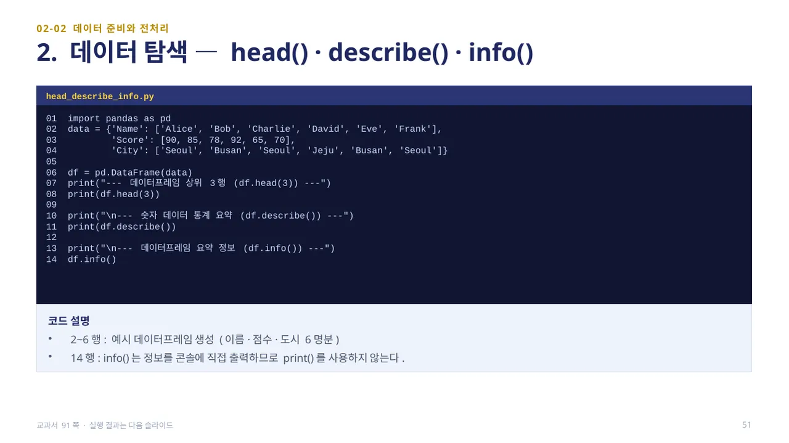
데이터를 불러온 뒤에는 탐색이 필요합니다. head_describe_info.py는 이름·점수·도시 정보를 담은 6명분 데이터프레임을 만들고, df.head(3)·df.describe()·df.info()를 차례로 실행합니다.
14행df.info()는 결과를 콘솔에 직접 출력하는 함수이므로 print()로 감싸지 않고 그냥 호출합니다. 세 함수의 실행 결과와 읽는 법은 다음 슬라이드에서 확인합니다. (교과서 91쪽)
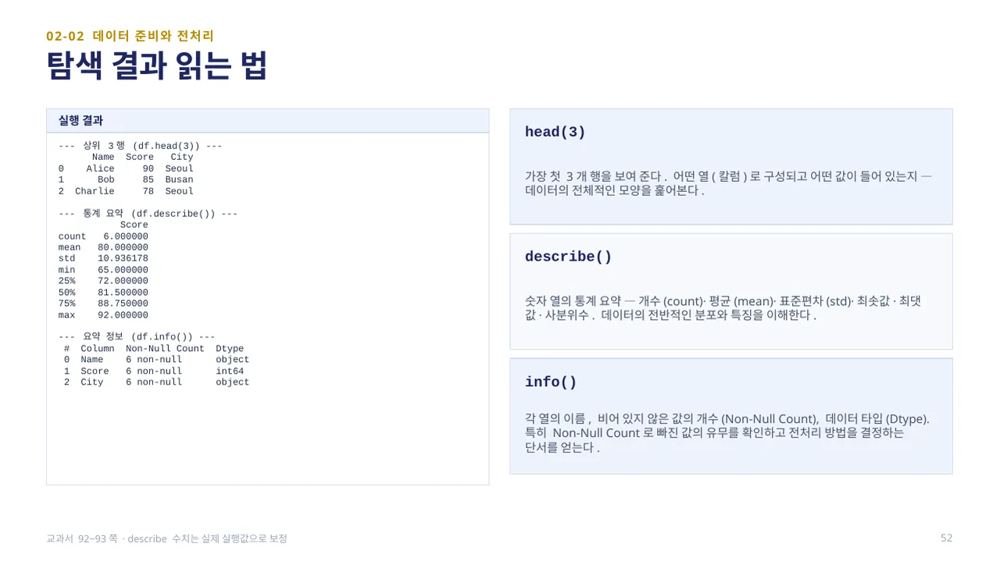
head(3)은 가장 첫 3개 행을 보여 주어 어떤 열(칼럼)로 구성되고 어떤 값이 들어 있는지, 데이터의 전체적인 모양을 훑어보게 합니다. describe()는 숫자 열의 통계 요약 — 개수(count)·평균(mean)·표준편차(std)·최솟값·최댓값·사분위수를 보여 주어 데이터의 전반적인 분포와 특징을 이해하게 돕습니다.
이 6명 점수(90, 85, 78, 92, 65, 70)를 실제로 실행하면 평균(mean) 80.0, 표준편차(std) 10.94, 최솟값 65, 최댓값 92가 나옵니다. info()는 각 열의 이름, 비어 있지 않은 값의 개수(Non-Null Count), 데이터 타입(Dtype)을 보여 주어 빠진 값의 유무를 확인하고 전처리 방법을 결정하는 단서가 됩니다. (교과서 92~93쪽 · 이 수치는 실제 실행값으로 맞춰 표기합니다)
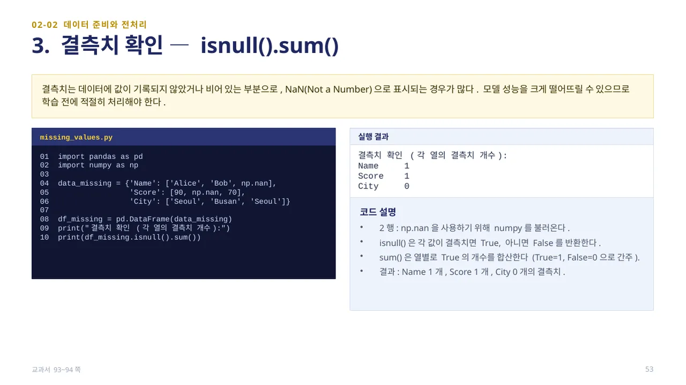
결측치는 값이 기록되지 않았거나 비어 있는 부분으로, NaN(Not a Number)으로 표시되는 경우가 많습니다. 모델 성능을 크게 떨어뜨릴 수 있으므로 학습 전에 적절히 처리해야 합니다.
missing_values.py는 이름·점수 일부가 np.nan인 데이터를 만들고 df_missing.isnull().sum()으로 확인합니다. isnull()은 각 값이 결측치면 True, 아니면 False를 반환하고, sum()은 열별로 True의 개수를 합산합니다. 실행 결과 Name 1, Score 1, City 0개의 결측치를 확인할 수 있습니다. (교과서 93~94쪽)
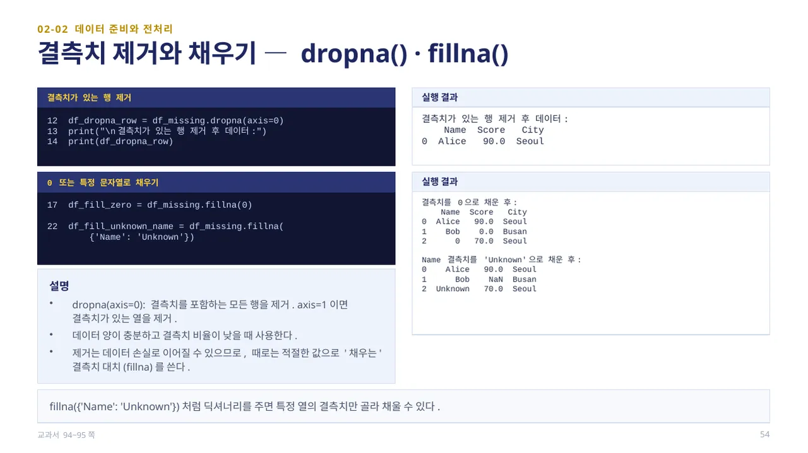
dropna(axis=0)은 결측치를 포함하는 모든 행을 제거합니다(axis=1이면 결측치가 있는 열을 제거). 데이터 양이 충분하고 결측치 비율이 낮을 때 사용하지만, 제거는 데이터 손실로 이어질 수 있어 때로는 적절한 값으로 채우는 fillna()를 사용합니다.
fillna(0)은 결측치를 모두 0으로 채우고, fillna({'Name': 'Unknown'})처럼 딕셔너리를 주면 특정 열의 결측치만 골라 채울 수 있습니다. 실행 결과에서 결측치가 있던 행을 제거하면 Alice 한 행만 남고, 0으로 채우면 Bob의 점수가 0.0, City의 결측 값이 0으로 채워집니다. (교과서 94~95쪽)
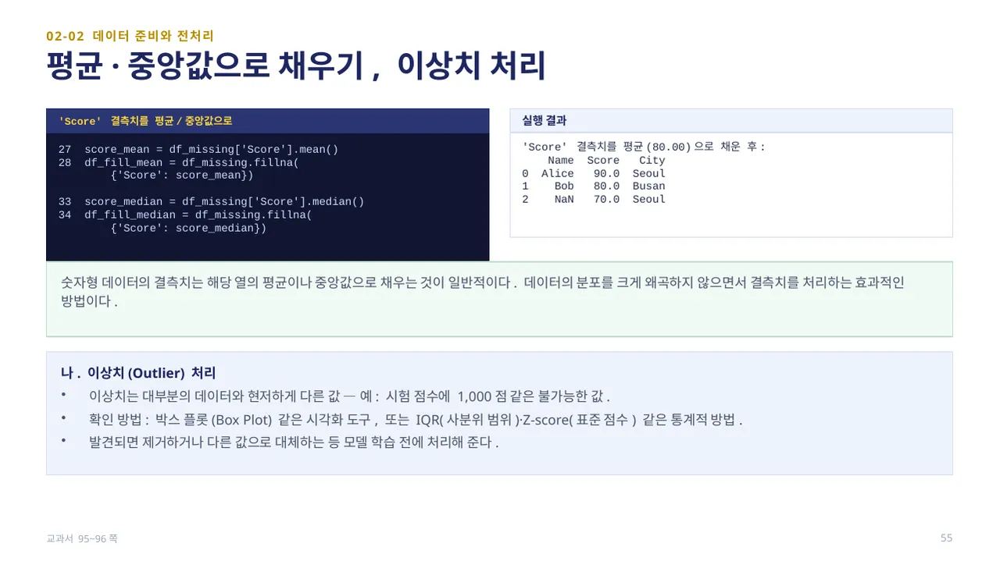
숫자형 데이터의 결측치는 해당 열의 평균이나 중앙값으로 채우는 것이 일반적입니다. df_missing['Score'].mean()으로 구한 평균 80.00으로 결측치를 채우면 데이터의 분포를 크게 왜곡하지 않으면서 결측치를 처리할 수 있습니다. 이 예제에서는 90과 70의 중간값이므로 평균과 중앙값이 같은 80이 나옵니다.
이상치(Outlier)는 대부분의 데이터와 현저하게 다른 값입니다(예: 시험 점수에 1,000점 같은 불가능한 값). 박스 플롯 같은 시각화 도구, 또는 IQR(사분위 범위)·Z-score(표준 점수) 같은 통계적 방법으로 확인하며, 발견되면 제거하거나 다른 값으로 대체하는 등 모델 학습 전에 처리합니다. (교과서 95~96쪽)
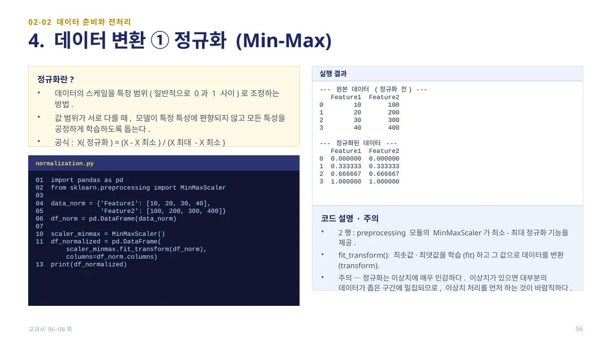
정규화는 데이터의 스케일을 특정 범위(일반적으로 0과 1 사이)로 조정하는 방법입니다. 값 범위가 서로 다를 때, 모델이 특정 특성에 편향되지 않고 모든 특성을 공정하게 학습하도록 돕습니다. 공식은 X(정규화) = (X - X최소) / (X최대 - X최소)입니다.
normalization.py의 10~11행은 MinMaxScaler()를 만들고 fit_transform()으로 최솟값·최댓값을 학습(fit)하면서 동시에 데이터를 변환(transform)합니다. Feature1이 [10,20,30,40]일 때 정규화 결과는 [0, 0.333, 0.667, 1]로 최솟값은 0, 최댓값은 1이 됩니다. 주의할 점은 정규화가 이상치에 매우 민감하다는 것입니다 — 이상치가 있으면 대부분의 데이터가 좁은 구간에 밀집되므로 이상치 처리를 먼저 하는 것이 바람직합니다. (교과서 96~98쪽)
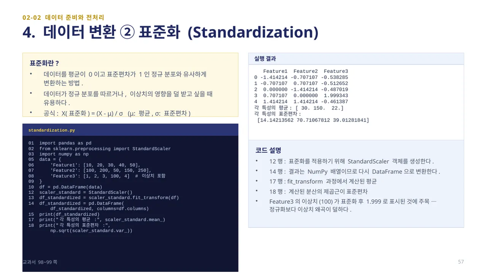
표준화는 데이터를 평균이 0이고 표준편차가 1인 정규 분포와 유사하게 변환하는 방법입니다. 데이터가 정규 분포를 따르거나 이상치의 영향을 덜 받고 싶을 때 유용합니다. 공식은 X(표준화) = (X - μ) / σ(μ: 평균, σ: 표준편차)입니다.
standardization.py는 이상치(100)가 포함된 Feature3을 StandardScaler()로 변환합니다. 17~18행에서 scaler_standard.mean_과 np.sqrt(scaler_standard.var_)로 계산된 평균·표준편차를 확인할 수 있습니다. Feature3의 이상치(100)가 표준화 후 1.999로 표시된 것에 주목하면, 표준화가 정규화보다 이상치의 왜곡을 덜 받는다는 것을 알 수 있습니다. (교과서 98~99쪽)
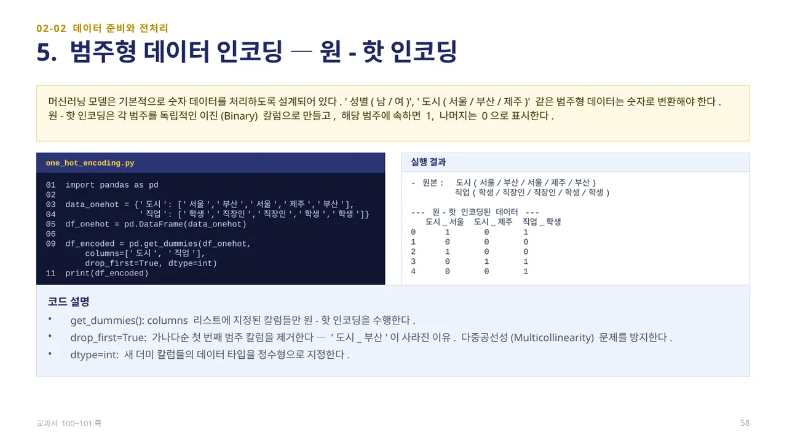
머신러닝 모델은 기본적으로 숫자 데이터를 처리하도록 설계되어 있습니다. ‘성별(남/여)’, ‘도시(서울/부산/제주)’ 같은 범주형 데이터는 숫자로 변환해야 합니다. 원-핫 인코딩은 각 범주를 독립적인 이진(Binary) 칼럼으로 만들고, 해당 범주에 속하면 1, 나머지는 0으로 표시합니다.
one_hot_encoding.py의 9행pd.get_dummies(df_onehot, columns=['도시', '직업'], drop_first=True, dtype=int)에서 drop_first=True는 가나다순 첫 번째 범주 칼럼을 제거합니다 — ‘도시_부산’이 사라진 이유이며, 다중공선성(Multicollinearity) 문제를 방지합니다. 결과 표에서 ‘도시_서울=0, 도시_제주=0’이면 나머지 범주인 ‘부산’이라는 뜻이 됩니다. (교과서 100~101쪽)
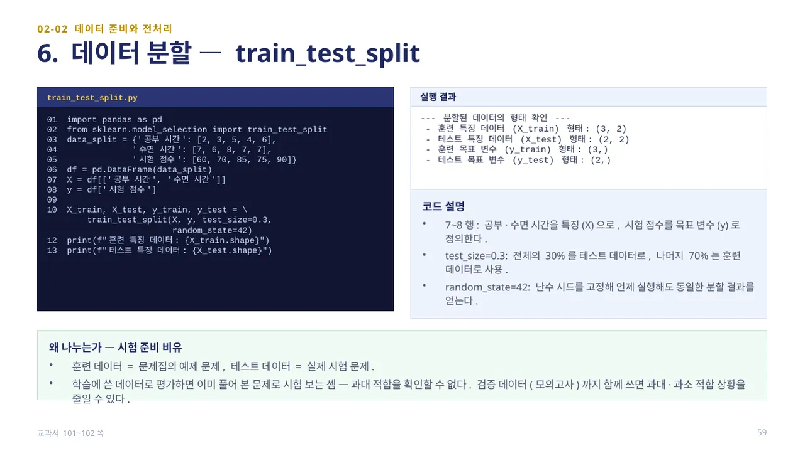
train_test_split.py의 7~8행에서 공부·수면 시간을 특성(X)으로, 시험 점수를 목표 변수(y)로 정의합니다. 10행train_test_split(X, y, test_size=0.3, random_state=42)에서 test_size=0.3은 전체의 30%를 테스트 데이터로, 나머지 70%는 훈련 데이터로 사용한다는 뜻이고, random_state=42는 난수 시드를 고정해 언제 실행해도 동일한 분할 결과를 얻게 합니다.
전체 5개 데이터 중 훈련 데이터 형태는 (3, 2), 테스트 데이터 형태는 (2, 2)입니다. 훈련 데이터는 문제집의 예제 문제, 테스트 데이터는 실제 시험 문제와 같습니다. 학습에 쓴 데이터로 평가하면 이미 풀어 본 문제로 시험 보는 셈이라 과대 적합을 확인할 수 없기 때문에 반드시 나누어야 합니다. (교과서 101~102쪽)
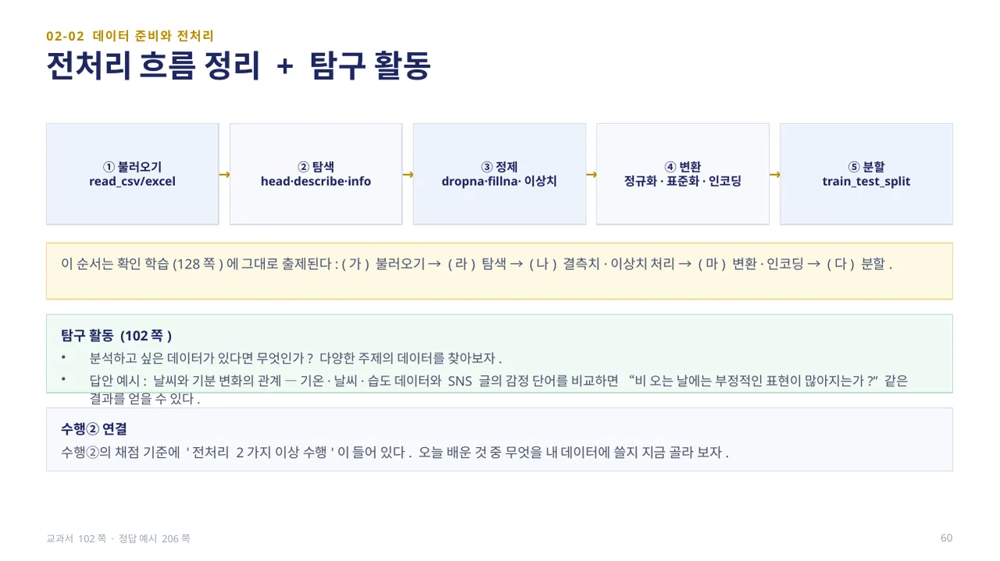
전처리의 전체 흐름은 ①불러오기(read_csv/excel) → ②탐색(head·describe·info) → ③정제(dropna·fillna·이상치) → ④변환(정규화·표준화·인코딩) → ⑤분할(train_test_split)의 순서입니다. 이 순서는 확인 학습(128쪽)에 그대로 출제됩니다.
탐구 활동(102쪽): 분석하고 싶은 데이터가 있다면 무엇인지 다양한 주제의 데이터를 찾아봅니다(답안 예시: 날씨와 기분 변화의 관계 — 기온·날씨·습도 데이터와 SNS 글의 감정 단어를 비교). 수행②의 채점 기준에는 ‘전처리 2가지 이상 수행’이 들어 있으므로, 오늘 배운 것 중 무엇을 쓸지 미리 골라 봅니다. (교과서 102쪽 · 정답 예시 206쪽)
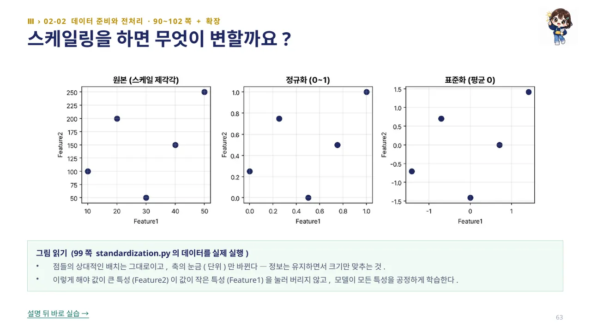
99쪽 standardization.py의 데이터를 실제로 실행해 그림으로 확인하면, 점들의 상대적인 배치는 그대로이고 축의 눈금(단위)만 바뀝니다 — 정보는 유지하면서 크기만 맞추는 것입니다.
이렇게 해야 값이 큰 특성(Feature2)이 값이 작은 특성(Feature1)을 눌러 버리지 않고, 모델이 모든 특성을 공정하게 학습합니다. 정규화·표준화의 공식을 숫자로 배운 직후, 같은 데이터를 그림으로 다시 확인하는 것입니다.
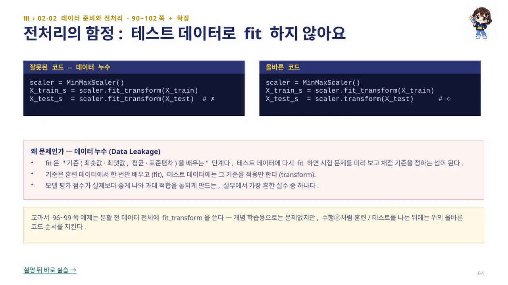
스케일링에서 가장 흔한 실수는 테스트 데이터에도 fit을 다시 하는 것입니다. 잘못된 코드는 X_test_s = scaler.fit_transform(X_test)처럼 훈련·테스트 데이터에 각각 fit_transform을 쓰지만, 올바른 코드는 X_train_s = scaler.fit_transform(X_train)으로 훈련 데이터에서만 기준을 배우고, X_test_s = scaler.transform(X_test)로 테스트 데이터에는 그 기준을 적용만 합니다.
fit은 최솟값·최댓값, 평균·표준편차 같은 기준을 배우는 단계입니다. 테스트 데이터에 다시 fit을 하면 시험 문제를 미리 보고 채점 기준을 정하는 셈이 되는 데이터 누수(Data Leakage)가 발생해, 모델 평가 점수가 실제보다 좋게 나와 과대 적합을 놓치게 만듭니다. 교과서 96~99쪽 예제는 분할 전 데이터 전체에 fit_transform을 쓰는데, 개념 학습용으로는 문제없지만 수행②처럼 훈련/테스트를 나눈 뒤에는 반드시 올바른 순서를 지켜야 합니다.
 인공지능 파이썬 실무
인공지능 파이썬 실무